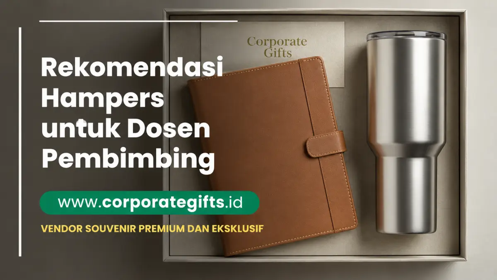

Corporate Gifts ID - Hampers untuk dosen pembimbing adalah kado tanda terima kasih yang diberikan mahasiswa setelah sidang skripsi atau wisuda, biasanya berisi barang fungsional seperti notebook agenda kulit, tumbler custom, buku, atau parcel kopi premium yang dikemas elegan sebagai ucapan terima kasih dosen atas bimbingan, waktu, dan kesabaran selama masa studi.
Bagi banyak mahasiswa, momen menyerahkan hampers sering kali menjadi salah satu kenangan paling berharga setelah sidang skripsi atau wisuda. Tak heran jika banyak yang mencari rekomendasi hampers wisuda yang tidak hanya indah secara tampilan, tetapi juga bermakna secara emosional dan profesional.
Poin Kunci Hampers Dosen Pembimbing:
- Makna Simbolis: Bentuk apresiasi atas transfer ilmu, waktu dedikasi bimbingan, dan arahan profesional selama penyusunan skripsi.
- Kombinasi Fungsional: Menggabungkan alat tulis kantor eksekutif, drinkware berkualitas tinggi, dan parcel konsumsi premium.
- Waktu Penyerahan Tepat: Diberikan setelah proses sidang dan yudisium selesai untuk menjaga etika akademik yang bersih.
- Kekuatan Kemasan: Kotak kraft pita satin atau rigid hardbox kayu memberikan kesan mewah dengan biaya yang tetap terukur.
Mengapa Memberikan Hampers untuk Dosen Pembimbing Itu Penting
Hubungan antara mahasiswa dan dosen pembimbing bukan hanya akademis, tetapi juga personal. Dosen berperan besar dalam membentuk pola pikir kritis, kedisiplinan riset, hingga semangat juang untuk menyelesaikan tugas akhir. Memberikan hampers corporate eksklusif menjadi wujud ucapan terima kasih dosen yang tulus, sebuah tanda penghargaan atas bimbingan yang sering kali melampaui jam kerja formal kampus.
Selain itu, pemberian hampers mencerminkan etika dan sopan santun dalam tradisi pendidikan tinggi. Sebuah hadiah wisuda yang dipilih dengan niat baik akan menciptakan kesan positif, memelihara tali silaturahmi, serta memperkuat jejaring profesional di masa depan ketika Anda memasuki dunia kerja.
1. Ide Hampers Praktis dan Bermanfaat
Jika Anda ingin memberikan hadiah yang berguna dan terlihat profesional, kategori hampers fungsional sangat direkomendasikan. Produk-produk ini tidak hanya tampil menawan di meja kerja, tetapi juga menemani rutinitas harian mengajar dan meneliti para dosen.
a. Buku Inspiratif & Pembatas Khusus
Buku selalu menjadi hadiah berbobot tinggi. Pilih buku bertema kepemimpinan, metodologi riset kontemporer, atau edisi spesial dengan sampul hardcover tebal. Anda dapat menyematkan pembatas buku berbahan logam custom grafir inisial atau kartu ucapan pribadi di halaman pembuka. Buku mencerminkan rasa hormat Anda terhadap dedikasi intelektual beliau.
b. Barang Custom Eksklusif
Sentuhan personalisasi logo kampus atau grafir nama membuat hampers terasa sangat istimewa:
- Mug atau Tumbler Custom: Pilihan botol minum berbahan stainless steel SUS 304 food-grade atau cangkir keramik elegan berukir nama dosen. Tumbler ini sangat praktis untuk menjaga suhu kopi atau teh hangat selama jam bimbingan.
- Pulpen dan Notebook Premium: Paduan legendaris yang tak lekang oleh waktu. Pulpen metal rollerball grafir dipadukan dengan notebook agenda kulit deboss dalam hardbox eksklusif memancarkan citra akademisi yang berwibawa.

Kombinasi notebook agenda kulit, tumbler vacuum stainless, dan pulpen grafir dalam balutan kotak kado eksklusif.
2. Ide Hampers yang Lebih Personal dan Unik
Bagi mahasiswa yang memiliki hubungan bimbingan yang sangat akrab, memberikan hampers dengan unsur sentimental dan perawatan diri (self-care) bisa menjadi opsi yang menyentuh hati:
a. Barang Fungsional dan Estetik
- Tanaman Hias Meja Kerja: Sukulen mini atau tanaman sansevieria dalam pot keramik bernuansa earthy memberikan kesegaran visual di ruang kerja dosen yang padat berkas.
- Parcel Kopi Artisan atau Teh Herbal: Biji kopi single origin specialty nusantara lengkap dengan dripper manual atau koleksi tisane teh herbal bunga menenangkan pikiran setelah hari-hari padat menguji sidang.
- Tas Laptop atau Pouch Organizer Kulit: Sleeve laptop berbahan vegan leather berdesain ramping untuk melindungi gadget dosen saat mobilitas antar-ruang kuliah.
b. Souvenir Personal dan Emosional
Frame Foto atau Plakat Akrilik Custom: Cetak foto momen bimbingan bersama teman satu kelompok riset atau plakat mini bertuliskan ungkapan terima kasih tulus. Hadiah ini memiliki nilai kenangan abadi yang sering kali dipajang di rak buku ruang kerja dosen selama bertahun-tahun.
3. Tips Memilih Hampers untuk Dosen Pembimbing
Agar kado yang Anda siapkan tidak berakhir sia-sia atau terkesan canggung, ikuti 4 panduan praktis berikut:
- Sesuaikan Minat dan Karakter: Perhatikan kebiasaan dosen Anda selama bimbingan. Dosen yang gemar membaca akan menyukai buku atau stationery, sedangkan dosen yang praktis akan lebih senang menerima tumbler thermal dan tas dokumen.
- Prioritaskan Nilai Guna (Utility): Hadiah yang dapat dipakai bekerja setiap hari jauh lebih bernilai daripada dekorasi pajangan yang rentan berdebu.
- Sentuhan Kartu Ucapan Tulus: Jangan lupakan selembar kartu ucapan bertuliskan tangan. Ceritakan pelajaran berharga yang paling berkesan dari beliau selama membimbing Anda.
- Waktu Pemberian yang Tepat: Berikan kado setelah nilai yudisium resmi keluar atau saat momen perayaan wisuda agar bebas dari kecurigaan konflik kepentingan.
4. Pilihan Hampers Berdasarkan Anggaran
Menentukan anggaran sejak awal membantu Anda menyusun paket hadiah yang proporsional tanpa membebani keuangan pribadi. Berikut matriks rekomendasi paket hampers dari katalog Corporate Gifts ID:
| Tingkatan Anggaran | Kisaran Harga | Rekomendasi Komposisi Produk | Karakteristik & Kemasan |
|---|---|---|---|
| Ekonomis | < Rp150.000 | Mug keramik custom + Kartu ucapan + Pulpen metal grafir nama | Sederhana, rapi, kotak kraft berpita satin |
| Menengah (Best Value) | Rp150.000 - Rp300.000 | Agenda kulit A5 deboss + Tumbler stainless vacuum SUS 304 + Pen set | Profesional, rigid magnetic box, sangat fungsional |
| Premium / Kelompok | > Rp300.000 | Executive leather briefcase + Powerbank nirkabel + Parcel kopi artisan | Mewah, kotak kayu pinus grafir laser, patungan teman riset |
5. Inspirasi Kemasan Hampers agar Terlihat Premium
Packaging adalah faktor penentu pertama yang menciptakan impresi kemewahan. Bahkan barang dengan harga terjangkau akan terlihat sangat berkelas jika dibalut dengan kemasan yang tepat:
- Kotak Kayu Pinus Grafir: Memberikan nuansa rustic, kokoh, dan artistik. Permukaan kayu dapat digrafir nama dosen atau logo fakultas.
- Hardbox Rigid Magnetik: Desain kotak kaku modern dengan penutup magnet dan bantalan busa (foam insert) presisi di dalamnya.
- Kotak Kraft Ramah Lingkungan: Desain minimalis earthy berbahan daur ulang tebal dengan hiasan tali rami atau pita satin emas.
6. Etika Memberikan Hadiah kepada Dosen
Dalam tradisi akademik, integritas adalah hal nomor satu. Pastikan pemberian hadiah mematuhi etika sopan santun berikut:
- Hindari Waktu Sebelum Sidang: Jangan pernah memberikan hadiah saat masa revisi atau sebelum sidang selesai agar dosen penguji maupun pembimbing tidak merasa berada dalam posisi kompromi nilai.
- Hindari Barang Bernilai Uang Tunai / Perhiasan: Hadiah berupa voucher belanja bernilai sangat tinggi, perhiasan mahal, atau uang tunai melanggar etika gratifikasi institusi pendidikan.
- Ungkapkan Terima Kasih Secara Berkelompok: Jika memungkinkan, kumpulkan dana patungan bersama rekan bimbingan satu dosen. Kado atas nama kelompok terasa lebih netral, kompak, dan berbobot.
Pertanyaan Seputar Hampers Dosen Pembimbing (FAQ)
Kesimpulan dan Konsultasi Pengadaan
Memberikan hampers untuk dosen pembimbing adalah bentuk penghormatan dan rasa syukur atas tuntasnya babak penting perjalanan akademik Anda. Dengan memilih kombinasi barang fungsional, personalisasi grafir nama yang elegan, serta kemasan yang rapi, Anda menorehkan kenangan positif yang akan selalu dihargai oleh beliau.
Konsultasikan kebutuhan paket gift set dan hampers custom wisuda kampus Anda bersama CorporateGifts.ID. Jelajahi pilihan produk di katalog produk resmi kami atau ajukan permohonan RAB melalui formulir permintaan penawaran harga sekarang juga untuk mendapatkan layanan profesional bergaransi tepat waktu.
Disclaimer: Estimasi biaya dan spesifikasi item hampers dalam panduan ini dapat disesuaikan secara fleksibel dengan preferensi anggaran Anda melalui tim konsultan resmi CorporateGifts.ID.